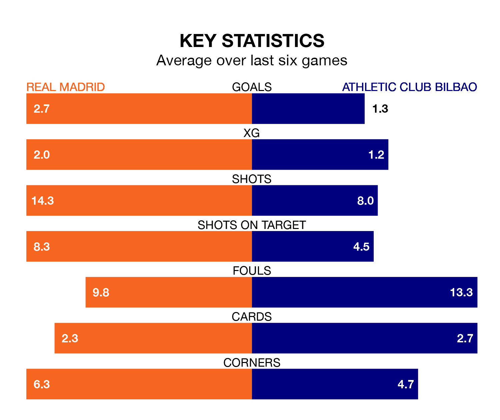

Two of La Liga's top sides face each other at the Estadio Santiago Bernabéu in Sunday's late kick-off, when table-topping Real Madrid host fourth-placed Athletic Club Bilbao.
Madrid have picked up 22 wins and six draws from 29 games so far this season, and sit 16 points above the visitors going into the 8pm match.
Athletic, meanwhile, have won 16 and drawn eight, picking up 56 points.
With 64 goals in 29 games so far this season, Madrid are the league's highest scorers with 2.2 goals per game. And they are conceding fewer than average, letting in 20 goals at a rate of 0.7 per game.
Athletic are also above average scorers, with 1.7 goals per game, compared to a league average of 1.3. They have conceded 0.9 goals per game.
In Jude Bellingham, the hosts have the league's sharpest shooter so far this season. He has notched 16 goals in 22 appearances.
His goal rate of one every 117 minutes is quicker than that of Gorka Guruzeta, the away side's top scorer with a goal every 151 minutes, and a total of 13 goals in 28 games.
In the last 10 years, Madrid and Athletic have played each other on 22 occasions. Madrid won 14 of them, Athletic three, and they drew five times.
On average, Madrid scored 1.6 goals and Athletic 0.6 in those matches.
Their last meeting was on August 12, when Madrid won 2-0 away.
Madrid are in good form in La Liga, with four wins and two draws from their last six games.
With three wins and two draws over that period, Athletic's form is worse – they have taken 11 points from 18, compared to Madrid's 14.
Madrid's last match was on March 16, a 4-2 win against CA Osasuna, with Vinicius Junior (two), Brahim Diaz and Daniel Carvajal getting the goals for Madrid.
Athletic beat Deportivo Alavés 2-0 last time out, also on March 16, with Guruzeta Rodríguez on the scoresheet.
Sunday's match will be refereed by Javier Alberola Rojas, who has taken charge of 12 La Liga games so far this season, issuing one red card and booking 44 players. He has awarded four penalties.
The last Madrid game Alberola Rojas refereed was a 3-1 away loss to Atlético Madrid on September 24. He is yet to oversee a match featuring Athletic this season.
Updated: 10:31 (UTC), 31/03/24